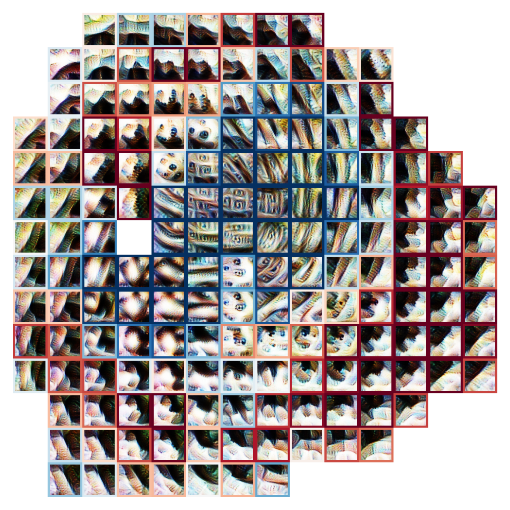

Dissertation
Dissertation on feature construction in vision models.
Dissertation on feature construction in vision models.

How inhibitory weights enable the construction of selective features.
Image-seeded feature visualizations reveal what a feature sees in an image.

Activation maximization can also tell us what networks can and can’t represent.
Automated circuit extraction in CNNs.

A tool for Visualizing Interpretable Subgraphs in CNNs.